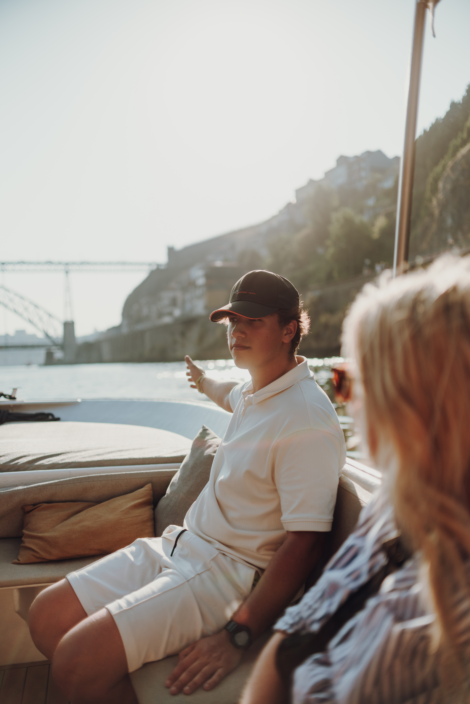
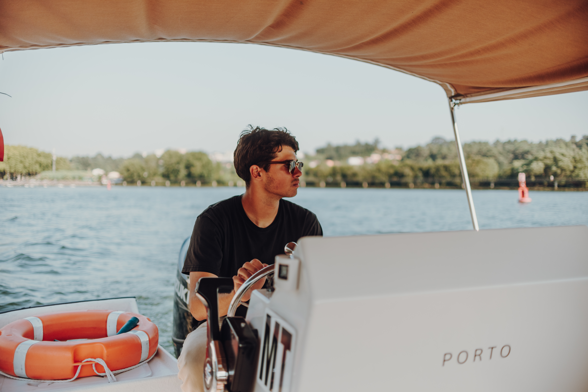

Are you ready for a Trip in "Your Friend's Boat"?

Authentic and Friendly Experiences on the Douro River
Boating Porto is dedicated to providing moments of exclusivity and comfort. We sail the waters of the Douro River with the aim of showcasing the city of Porto from a unique and appropriate perspective.
Whether on a private charter or a shared tour, we guarantee excellent service focused on hospitality and attention to detail.
Our Experiences
Private Trip
Experience the Douro River in complete privacy and comfort. Our Private Charters are designed for those who seek an exclusive escape, whether you are celebrating a special milestone, planning a romantic proposal, or simply wishing to enjoy the Porto skyline with your inner circle.
Onboard our premium vessel, you are the master of the itinerary. Relax on the deck with a glass of curated Portuguese wine, enjoy personalized storytelling from our expert skipper, and discover hidden perspectives of the UNESCO World Heritage banks.


Shared Trip
Our Shared Experiences are perfect for solo travelers, couples, or small groups who want to discover the magic of Porto while meeting like-minded explorers. We keep our groups small to ensure the atmosphere remains intimate and premium.
Glide under the iconic six bridges as you share stories and a toast with fellow travelers. It’s a relaxed, friendly, and sophisticated way to learn about the city’s deep-rooted wine culture and history.
Online Booking
Select down below your preferred experience to check availability.